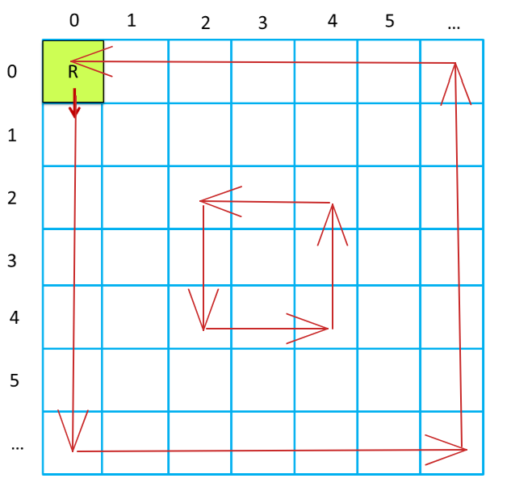
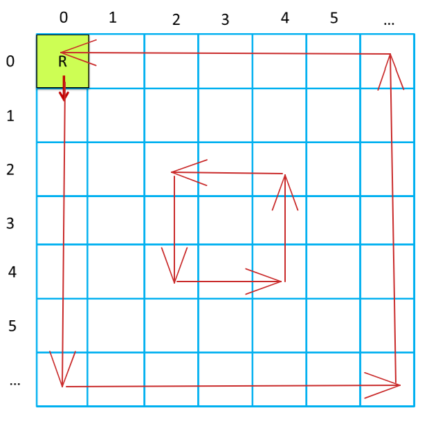
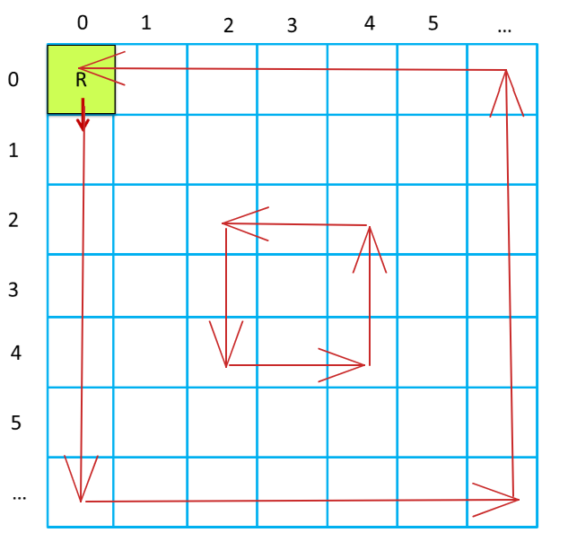

Si desidera realizzare un robot aspirapolvere con il seguente requisito:
Muovere il VirtualRobot in modo da coprire tutta la superficie di una stanza vuota.
Una possibile criticità si rivela nel trovare un modo oggettivo per capire se il robot sia passato sui punti della stanza.
Il robot può avere vari modi per tenere traccia di dove è già passato:
Per attuare le strategie riportate di seguito conviene seguire un'ipotesi:
il robot si muove per passi di lunghezza DR
dove DR è il raggio della circonferenza in cui è possibile inscrivere il robot
DR diventa quindi l'unità di misura per le distanze e anche la stanza viene divisa in celle quadrate di lato DR
Emerge qui una criticità: se la stanza non ha dimensioni multiple di DR come fare?

La strategia più adeguata e facilmente verificabile è il movimento a colonne